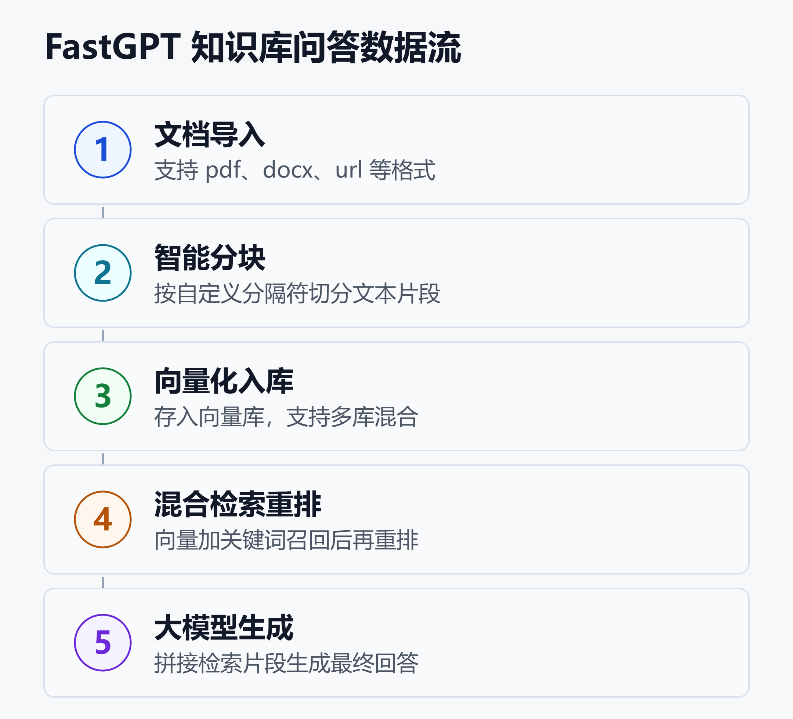

用 FastGPT 搭企业知识库：能力边界、部署形态与合规细节全梳理
一个被反复问到的问题是：想给公司文档做个能问答的知识库，用哪个开源平台？
FastGPT 常被列进候选。它的 GitHub 仓库 labring/FastGPT 截至 2026 年 9 月初约有 2.95 万 star、7297 个 fork、275 个 release，官方称已服务 1000 多家企业客户。最新版本是 2026-09-03 发布的 v4.16.2。
但「能不能用」和「适不适合你」是两回事。这篇不做多平台横评，只把 FastGPT 一个平台讲透：它擅长什么、边界在哪、三种部署怎么选、最新版本改了什么、以及采购和合规最关心的数据留存细节。
一、FastGPT 到底是什么
官方现在的定位是「AI Agent 构建平台」，提供开箱即用的数据处理与模型调用能力，并通过 Flow 可视化做工作流编排。
拆开看，它其实是三层能力叠在一起：
- 知识库层：把文档灌进去，切块、向量化、检索。
- 工作流层：用可视化画布把「检索 + 大模型 + 逻辑判断」串起来。
- 发布层：把搭好的应用发成对话窗口、Iframe 嵌入或 API。
和 RAGFlow 这类「纯检索引擎」相比，FastGPT 更偏应用组装；和 Dify 这类「全栈 LLM 平台」相比，它的重心又更靠近知识库问答。这个定位决定了它的甜区，也决定了它的边界。

如上图，一次问答在 FastGPT 里要经过「文档导入 → 分块 → 向量化入库 → 混合检索重排 → 大模型生成」五个环节。回答质量高度依赖中间的检索环节：检索片段不准，后面的大模型再强也救不回来。这一点后面会展开。
二、核心能力拆解
2.1 知识库：能力最成熟的部分
这是 FastGPT 最扎实的模块，README 里已勾选的能力包括：
- 多知识库复用与混合检索
- chunk 记录的增、删、改
- 支持手动录入、直接分段、QA 拆分三种导入
- 支持 txt、md、html、pdf、docx、pptx、csv、xlsx，以及 URL 读取
- 混合检索加重排（rerank）
- API 知识库（把外部数据源当知识库接进来）
对大多数「文档问答」场景，这套能力够用。它的分块支持自定义分隔符和更大的分块尺寸，能按业务文档的结构来切。
2.2 工作流：可视化编排
工作流是 FastGPT 从「知识库问答」走向「Agent」的关键。画布上把节点连起来，就能做出带条件判断、多轮交互的应用。
 图片来源：
图片来源： 图片来源：
图片来源：v4.16 系列在工作流上加了几样实用能力：
- 拖动节点自动对齐、居中
- 用户选择节点：用「确认/取消」做条件分支
- 本地编辑历史，支持撤销、重做快捷键
- 工作流版本重命名
- HTTP 节点支持 text/plain 模式与超时设置
需要注意：用户选择节点只能用在工作流里，不兼容插件和工具调用，也不支持 Debug 模式。这类限制在动手前要先确认。
2.3 Agent 与生态：Skill 与双向 MCP
FastGPT 支持 Agent Skill 编排和双向 MCP——既能作为 MCP 客户端调外部工具，也能把自己的能力暴露成 MCP 服务给别的系统调。这让它更容易嵌进已有的 Agent 体系里。想了解协议本身，可参考 MCP 与 A2A：AI Agent 协议深度解析。
 图片来源：
图片来源： 图片来源：
图片来源：三、能力边界：别拿它做什么
调研里最值得强调的，其实是它的边界。
检索质量强依赖 chunk。 官方文档自己也承认，RAG 的表现完全取决于检索到的片段质量。文档没切好、召回不准，问答就会答非所问，跨领域的模糊问题尤其明显。想上生产，检索调优是绕不开的功课，可以配合 BM25 与向量混合检索的规模化实践 一起看。
文档偏中文生态。 海外评测普遍反映，FastGPT 的文档高度面向国内市场，是国际化团队上手的主要摩擦点。
部分功能依赖特定部署环境。 一些能力在云版、自托管、商业版之间并不完全一致，社区还反馈过 loop 节点终止失败、部分群晖内核上代码沙箱启动报错等问题，且未在最近一轮更新里修复。
它不是深度文档解析引擎。 需要版面识别、OCR、复杂表格抽取的场景，RAGFlow 这类专门引擎更合适；FastGPT 的强项是把检索结果组装成可用的问答应用，而不是把扫描件解析到极致。
四、三种部署形态怎么选
FastGPT 提供三种形态，对应三类需求：
| 形态 | 适合谁 | 关键点 |
|---|---|---|
| 云服务 | 快速试用 | 免运维，数据在云端 |
| 社区自托管 | 有运维能力 | Docker 或 Sealos |
| 商业私有化 | 强合规诉求 | 完整功能加支持 |
自托管最快的路径是 Docker。官方提供一键拉取配置的脚本，核心命令是这样：
bash <(curl -fsSL \
https://doc.fastgpt.io/deploy/install.sh)
docker compose up -d
启动后访问 3000 端口，默认账号 root、密码 1234，记得第一时间改掉。
这里有一个许可证的坑必须讲清楚：FastGPT 用的是自定义的「FastGPT 开源协议」，允许作为后端服务商用，但明确禁止用它对外提供 SaaS 服务。也就是说，你能用它给自己公司搭内部系统，但不能包装成多租户产品卖给别人。这不是标准的 OSI 开源许可，选型时务必看清 LICENSE。
五、v4.16 系列改了什么
2026-08-16 的 v4.16.0 是近期分量最重的一次更新，改动集中在三块。
5.1 代码沙箱：从会话级改到用户级
以前沙箱绑在单次对话上，现在绑到「应用 + 用户」。同一用户在同一应用里的多次对话，复用一个沙箱实例，文件按会话目录隔离。沙箱里的 HTML 和文件能通过短时只读链接预览，省掉一轮往对象存储的上传。
CPU、内存、存储、自动挂起、自动归档这些限制，现在都能用环境变量配。默认值大致是：1 核 CPU、2048 MiB 内存、1 GiB 存储、闲置 60 分钟自动挂起、7 天自动归档。想了解沙箱本身的价值，可参考 AI Agent 代码沙箱指南。
一个迁移提醒：E2B 沙箱方案已被移除，老部署要迁到 OpenSandbox 或 Sealos Devbox，且有强制迁移脚本。
5.2 知识库自定义元数据
知识库条目现在能带自定义元数据，可以用 JSON、CSV、Excel 模板导入。关键在于：检索结果和备份导出都会保留这个字段。这意味着来源、版本、密级这些标签能跟着检索到的答案一起回流到业务系统，对做权限和审计的团队很有用。
5.3 安全加固
- 审计日志到期后转冷归档，不再直接删除
- 管理员配置的工具密钥做了静态加密
- 系统初始化接口不再返回模型 API Key、请求地址和内部配置
官方也划了一条部署红线：沙箱预览代理应该用和主站不同的源（origin）。同源部署会把预览脚本放进主站的安全边界里，而系统目前不强制做源隔离校验，这块要靠部署方自己守住。
六、合规与数据留存细节
越来越多的采购评审会问一句：数据是怎么删的、留多久？FastGPT 把这些散落在隐私政策、升级说明和 API 文档里的口径做了整合，几个默认值值得记下。
- 模型调用链路（短期调试用）默认留存 6 小时，由
LLM_REQUEST_TRACKING_RETENTION_HOURS控制 - 挂起的沙箱按闲置天数归档，默认 7 天，由
AGENT_SANDBOX_ARCHIVE_INACTIVE_DAYS控制 - 审计日志到期转冷归档，因为这类数据留存是为了可追溯，而不是为了删
还有三条边界要特别注意：
- 清空会话的那个 API，只影响用 API Key 创建的会话，不会清 Web 端和分享链接产生的会话
- 自动清理依赖后台任务，任务可能失败（历史上修过两个相关缺陷），所以「请求删除」和「确认已删」要分开验证
- 自托管和私有化部署下，留存与清理由部署方自己管，环境变量只是可调的开关，不等于合规结论
想把可观测性和审计做扎实的团队，可以搭配 Langfuse：LLM 与 Agent 可观测性实战 一起建设。
七、选型建议
综合下来，给几类团队的判断：
适合用 FastGPT 的：
- 想快速搭一个「文档问答」内部系统，团队有基本运维能力
- 需要可视化工作流把检索和大模型串起来，但不想写太多代码
- 有私有化和数据不出域的诉求，愿意上自托管或商业版
- 已经在用 MCP 体系，想把知识库能力接进去
建议绕开或另选的：
- 想把它包装成多租户 SaaS 对外卖——许可证不允许
- 核心诉求是扫描件、复杂表格的深度解析——RAGFlow 更专业
- 需要完整 LLMOps、大规模应用编排的研发团队——Dify 的全栈能力更全
- 完全没有运维投入、又要求高度定制——门槛会偏高
一句话：FastGPT 是「快速搭知识库问答」这条窄赛道上很称手的工具，但它不是万能的应用平台，也不是任你商业化的自由软件。 想看它和其他平台的横向站位，可参考 Dify、Coze、RAGFlow、N8N、FastGPT 五平台深度对比。
小结
FastGPT 的价值集中在知识库问答的快速落地：知识库模块成熟、工作流可视化、支持双向 MCP，v4.16 又补齐了用户级沙箱、知识库元数据和一批安全加固。它的边界同样清晰：检索质量吃 chunk、文档偏中文、许可证禁止 SaaS、深度文档解析非其所长。
选型的关键不是「它好不好」，而是「你的场景落在它的甜区里没有」。把本文的能力边界、部署形态和合规细节对着自己的需求过一遍，答案自然就清楚了。
免责声明
本文基于 2026 年 9 月公开资料整理，涉及的版本号、默认参数与许可条款可能随官方更新而变化，实际部署请以官方文档和 LICENSE 为准。文中不构成任何采购或投资建议。
参考来源
- GitHub —— labring/FastGPT 官方仓库 README
- FastGPT 官方文档 —— 工作流&插件
- FastGPT 官方文档 —— 技能基础介绍
- FastGPT 官方文档 —— MCP 发布
- PR Newswire —— FastGPT 发布 v4.16.0：用户级沙箱与知识库元数据
- PR Newswire —— 开源 AI 编排工具发布工作流与部署增强
- PR Newswire —— FastGPT 公布数据留存周期与删除语义
- Yahoo Finance —— FastGPT 更新 Agent 沙箱运行时与升级指引
- fastgpt.io —— FastGPT RAG 局限性与优化
延伸阅读
- Dify、Coze、RAGFlow、N8N、FastGPT 五平台深度对比
- MCP 与 A2A：AI Agent 协议深度解析
- BM25 与向量混合检索的规模化实践
- Langfuse：LLM 与 Agent 可观测性实战
- AI Agent 代码沙箱指南
推荐搭配装备
善其事，利其器。以下硬件能最大化你的效率体验👇
🔗 通过以上链接购买可支持本站持续运营 🙏